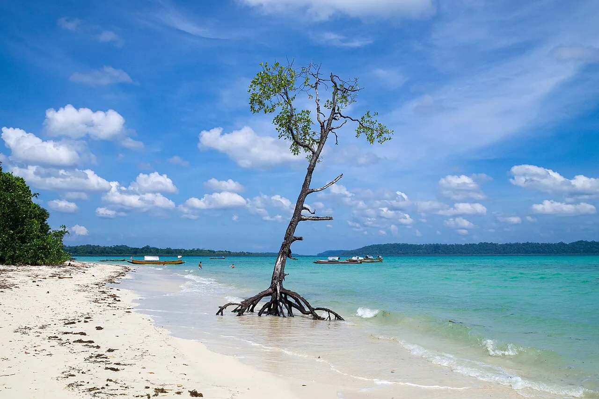

Havelock (Swaraj Dweep)
Andaman, Inde · plongée, snorkeling, baignade

Île des Andaman aux eaux cristallines et plages de rêve comme Radhanagar. Plongée sur des récifs préservés.
- Lieu
- Andaman, Inde
- Niveau
- Débutant
- Activités
- plongée, snorkeling, baignade
- Type d'eau
- Mer / océan
- Coordonnées
- 11.97, 93.00 (position approximative du secteur)
Dangers à connaître
- Crocodiles marins dans certaines zones.
- Corail protégé.
Le conseil d'Ocean Buddy
Renseigne-toi sur le permis d’accès aux îles.
Ouvrir dans Ocean Buddy Télécharger sur l'App Store
Source : Fiche Ocean Buddy · septembre 2026 · à vérifier localement.